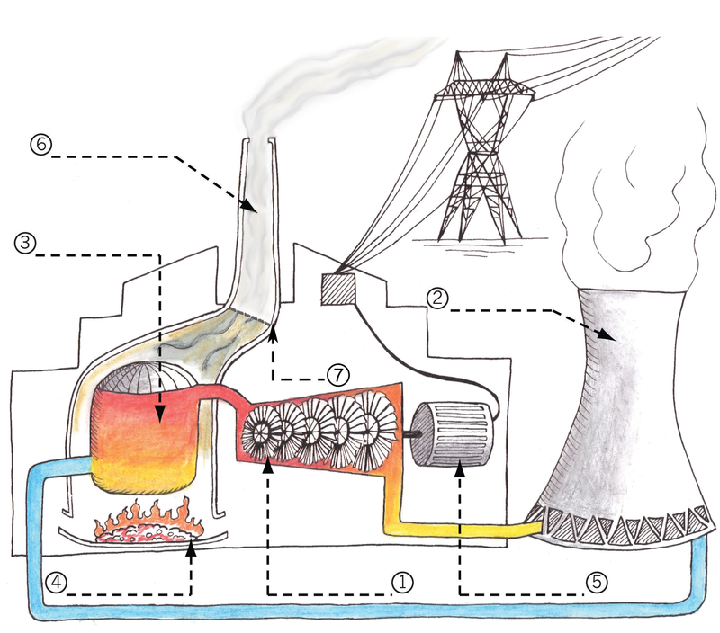

<div class="container">
  <div id="contents" class="col-md-12 main-content"><h1 xmlns="http://www.w3.org/1999/xhtml" id="toc-id-11">Mini-pat design a house to use less energy</h1>

    <p xmlns="http://www.w3.org/1999/xhtml" class="x--Body-opener">When electricity is generated, it has
    a negative impact on the environment. To burn wood or gas or
    paraffin, also has a negative impact. During the next three
    weeks, you will think of ways to reduce this negative impact by
    designing a house in a clever way.</p>
    
    <figure xmlns="http://www.w3.org/1999/xhtml"><figcaption>Figure 1: A cleverly designed house lets the sun’s heat in on a winter’s day, but keeps it out on a
summer’s day.
</figcaption></figure><h2 xmlns="http://www.w3.org/1999/xhtml" class="x--Heading-Chapter" id="toc-id-12">Week 1</h2>

    <h2 xmlns="http://www.w3.org/1999/xhtml" id="toc-id-13">The hidden cost of electricity</h2>

    <p xmlns="http://www.w3.org/1999/xhtml" class="x--Body-Text">In the last few years, the cost of
    electricity has increased a lot. Some people are unhappy about
    this, because they don't have enough money to pay for
    electricity.</p>

    <p xmlns="http://www.w3.org/1999/xhtml" class="x--Body-indent-1-3">Electricity also has another cost
    that has nothing to do with money. This is the "cost" of
    electricity to the environment. Just like the amount of money
    that people have changes when they pay for electricity, so the
    environment changes when electricity is generated.</p>

    <div xmlns="http://www.w3.org/1999/xhtml" class="aside">
      <p class="x--Body-box-no-indent">To make electricity is
      usually called to <b>generate</b> electricity.</p>
    </div>

    <p xmlns="http://www.w3.org/1999/xhtml" class="x--Body-indent">This week, you will learn how the
    environment is changed by electricity generation. This change
    is often bad for the environment. You can say that electricity
    generation has a <b>negative
    impact</b> on the environment.</p>

    <p xmlns="http://www.w3.org/1999/xhtml" class="x--Body-indent">You will think about ways that this
    negative impact can be reduced.</p>

    <h2 xmlns="http://www.w3.org/1999/xhtml" id="toc-id-14">Where does electricity come from? (30 minutes)</h2>

    <figure xmlns="http://www.w3.org/1999/xhtml"><figcaption>Figure 2
</figcaption></figure><figure xmlns="http://www.w3.org/1999/xhtml"><figcaption>Figure 3
</figcaption></figure><figure xmlns="http://www.w3.org/1999/xhtml"><figcaption>Figure 4
</figcaption></figure><figure xmlns="http://www.w3.org/1999/xhtml">
<figcaption>Figure 5
</figcaption></figure><p xmlns="http://www.w3.org/1999/xhtml" class="x--Body--above">The boy followed the electricity
    lines to see where electricity comes from. When he went inside
    the power plant, a technician told him how a coal-fired power
    plant works. This is what she told him:</p>

    <p xmlns="http://www.w3.org/1999/xhtml" class="x--Body-story para-style-override-37"><i>"In a power
    station, coal is burnt underneath a tank full of water that is
    called a boiler. The heat from the fire makes the water boil
    and evaporate to form steam with a high pressure. The high
    pressure steam blows through a turbine and makes it turn. This
    is very much like the wind making a wind pump turn. A device
    called a generator converts the rotational movement of the
    turbine into electricity.</i></p>

    <p xmlns="http://www.w3.org/1999/xhtml" class="x--Body-story para-style-override-38"><i>The gases and
    smoke from the fire passes through a filter before it goes
    through the chimney into the air. The filter removes most of
    the ash and soot particles, so that there is only a little bit
    of smoke that comes out the top of the chimney."</i></p>
    
    <div xmlns="http://www.w3.org/1999/xhtml" class="faside">
      <p class="x--Body-box-no-indent">When a balloon bursts, or
      when there is a puncture in a bicycle or a motorcar tyre, the
      air inside bursts out very quickly and strongly. This is
      because the air inside a balloon and a tyre is under high
      pressure.</p>
    </div>
    
    <figure xmlns="http://www.w3.org/1999/xhtml"><figcaption>Figure 6 </figcaption></figure><figure xmlns="http://www.w3.org/1999/xhtml"><figcaption>Figure 7 </figcaption></figure><p xmlns="http://www.w3.org/1999/xhtml" class="x--Body--above">A coal-fired power plant has the
    following parts:</p>

    <ul xmlns="http://www.w3.org/1999/xhtml"><li class="x--Body-text-bullet"><span class="char-style-override-8"/> A
      generator.</li>

      <li class="x--Body-text-bullet"><span class="char-style-override-8"/> A cooling
      tower. This tower uses air to cool the steam that comes out
      of the turbine. This makes the steam condense into water,
      which is then reused. Only a little bit of steam is released
      from the top of the tower.</li>

      <li class="x--Body-text-bullet"><span class="char-style-override-8"/> A furnace
      where the coal is burnt.</li>

      <li class="x--Body-text-bullet"><span class="char-style-override-8"/> A filter
      to remove ash and soot particles, so that they are not
      released into the air.</li>

      <li class="x--Body-text-bullet"><span class="char-style-override-8"/> A chimney
      releasing carbon dioxide into the atmosphere.</li>

      <li class="x--Body-text-bullet"><span class="char-style-override-8"/> A
      turbine.</li>

      <li class="x--Body-text-bullet"><span class="char-style-override-8"/> A boiler
      tank where water is changed into high-pressure steam.</li>
    </ul><h3 xmlns="http://www.w3.org/1999/xhtml" class="x--Head-investigation">Investigate: the different parts of a power station</h3>

    <p xmlns="http://www.w3.org/1999/xhtml" class="x--Body-Text">Which part of a power station is shown
    by which number on the picture in Figure 7? Use your pencil to
    write the names of the parts on the dashed lines next to the
    numbers on the picture.[3½]</p>

    <h2 xmlns="http://www.w3.org/1999/xhtml" id="toc-id-15">How does electricity generation impact on the environment?(30 minutes)</h2>

    <p xmlns="http://www.w3.org/1999/xhtml" class="x--Body-Text">Look at the picture below.</p>
<figure xmlns="http://www.w3.org/1999/xhtml"><figcaption>Figure 8: Can mass disappear into nowhere?
</figcaption></figure><p xmlns="http://www.w3.org/1999/xhtml" class="x--Body--above">The ash left at the end weighs much
    less than the wood from which the fire was made at the start.
    What happened to the rest of the weight?</p>
    <hr xmlns="http://www.w3.org/1999/xhtml"/><p xmlns="http://www.w3.org/1999/xhtml" class="x--Body--above">There are many different materials or
    substances that you can burn to create heat and light. Wood,
    coal, paraffin, gas and oil are some of the substances that you
    know about. They are called <span class="char-style-override-3">fuels</span>. All of these fuels
    contain <span class="char-style-override-3">carbon</span>.</p>

    <p xmlns="http://www.w3.org/1999/xhtml" class="x--Body-indent-1-3">Carbon is one of the main
    building blocks from which plants and animals are made. These
    building blocks are very small. It is impossible to see them.
    Carbon is a solid.</p>

    <p xmlns="http://www.w3.org/1999/xhtml" class="x--Body-indent-1-3">Carbon stores energy, like a
    battery. When carbon is on its own, you can say the battery is
    charged. When the carbon is <b>bonded</b> with another small
    building block called <b>oxygen</b>, then the battery is
    flat. Oxygen <span>is a gas. When carbon is bonded to oxygen,
    they are tog</span>ether called <b>carbon dioxide</b><span>. Carbon dioxide
    is a gas</span>.</p>

    <div xmlns="http://www.w3.org/1999/xhtml" class="frame-75">
      <p class="x--Body-box-no-indent">When two very small building
      blocks of a material are close together, they stick together,
      as if they were glued with very strong glue. This is called
      <b>chemical bonding</b>.
      You will learn more about this later when you do chemistry in
      natural science.</p>
    </div>

    <p xmlns="http://www.w3.org/1999/xhtml" class="x--Body-Text para-style-override-41">Go outside on a
    very cold but sunny winter's day. Let the sunlight shine on
    your hand. Why does your hand start to feel warm, even though
    the air around it is very cold? It is because the sunlight is
    changed into heat, inside your skin. Light and heat are two
    different forms of energy. Movement and electricity are two
    other forms of energy.</p>

    <p xmlns="http://www.w3.org/1999/xhtml" class="x--Body-Text para-style-override-41">When carbon
    bonds with oxygen, energy is released in the form of heat:
    carbon + oxygen = carbon dioxide + energy.</p>

    <p xmlns="http://www.w3.org/1999/xhtml" class="x--Body-Text">This is what happens when an animal
    eats food that contains carbon and breathes air that contains
    oxygen. The carbon and oxygen combine inside the animal to give
    it energy and to make it grow. The same thing happens when
    plant material containing carbon burns in air.</p>

    <p xmlns="http://www.w3.org/1999/xhtml" class="x--Body-Text para-style-override-41">To separate
    carbon and oxygen that is bonded, energy is needed. Plants
    separate carbon and oxygen by using the energy of sunlight:
    carbon dioxide + light = carbon + oxygen.</p>

    <p xmlns="http://www.w3.org/1999/xhtml" class="x--Body-text-1-3 para-style-override-42">Plants use
    the carbon to grow, because carbon is the main building block
    of plants. They release the oxygen back into the air.</p>

    <p xmlns="http://www.w3.org/1999/xhtml" class="x--Body-text-1-3 para-style-override-43">The change
    of carbon into carbon dioxide and thenback into carbon is
    called the <span class="char-style-override-3">carbon
    cycle</span>. This is shown in the picture on the next
    page.</p>

    <p xmlns="http://www.w3.org/1999/xhtml" class="x--Body-Text para-style-override-41">When you make a
    fire or burn gas or paraffin in your house, carbon dioxide is
    released into the air. When you use an electrical stove, no
    carbon dioxide is released from your house. But carbon dioxide
    is released from a power plant that makes the electricity you
    use.</p>

    <figure xmlns="http://www.w3.org/1999/xhtml"><figcaption>Figure 9: The carbon cycle
</figcaption></figure><h3 xmlns="http://www.w3.org/1999/xhtml" class="x--Head-investigation">Investigate: carbon dioxide</h3>
    <ol xmlns="http://www.w3.org/1999/xhtml"><li><ol><li>
    <p class="x--Body-investigation-hanging"> What changes
    carbon dioxide gas back into carbon in a solid form?(1)</p>
    <hr/></li>
<li>
    <p class="x--Body-investigation-hanging-a-"> What does this
    solid carbon become part of?(1)</p>
    <hr/></li>
</ol></li><li>
    <p class="x--Body-investigation-hanging"> Can you see carbon
    dioxide rising from a fire?(½)</p>
    <hr/></li>
<li>
    <p class="x--Body-investigation-hanging"> People use fuel for
    light and heat. What else do they use fuel for?(1)</p>
    <hr/></li>
</ol><p xmlns="http://www.w3.org/1999/xhtml" class="x--Body-text-1-3 para-style-override-38">On the right
    is a picture of a <b>greenhouse</b>.
    Greenhouses keep plants warm in winter, by using the energy of
    sunlight. It lets the energy of sunlight come inside, but does
    not let the same amount of energy go outside again. Therefore,
    it is warmer inside a greenhouse than outside. Greenhouses can
    be made from glass or plastic.</p>
    
    <figure xmlns="http://www.w3.org/1999/xhtml"><figcaption>Figure 10
</figcaption></figure><p xmlns="http://www.w3.org/1999/xhtml" class="x--Body-indent-1-3 para-style-override-37">The layer
    of air around the earth is called the <b>atmosphere</b>. It is a little bit
    like the glass or plastic covering of a greenhouse. It lets the
    energy of sunlight in, but does not let the same amount of
    energy escape again. This is called the <b>greenhouse effect</b>. If this did not happen,
    it would be freezing cold every night!</p>
    
    <figure xmlns="http://www.w3.org/1999/xhtml"><figcaption>Figure 11</figcaption></figure><p xmlns="http://www.w3.org/1999/xhtml" class="x--Body-indent-1-3 para-style-override-46">When
    something is burnt, carbon dioxide is released into the air.
    Carbon dioxide is a gas that is very good at trapping the
    energy of sunlight. But only a small part of air is made of
    carbon dioxide. The more carbon dioxide is in the atmosphere,
    the more energy of sunlight is trapped, which means it will
    become warmer on earth. Many people are worried that the
    <b>climate is changing</b>,
    which can lead to droughts and storms.</p>

    <ol xmlns="http://www.w3.org/1999/xhtml"><li value="4">
    <p class="x--Body-investigation-hanging"> What would happen
    if the amount of carbon dioxide in the atmosphereincreases?
    (1)</p>
    <hr/></li>
</ol><p xmlns="http://www.w3.org/1999/xhtml" class="x--Body-Text para-style-override-48">Total
    [4.5]</p>

    <h2 xmlns="http://www.w3.org/1999/xhtml" id="toc-id-16">How can the negative impact of electricity generation be reduced? (60 minutes)</h2>

    <p xmlns="http://www.w3.org/1999/xhtml" class="x--Body-Text">Later this year, you will learn about
    different kinds of power stations. Some of them release less or
    no carbon dioxide into the atmosphere. There is hope that in
    future, less electricity will be generated by coal-fired power
    stations. But m<span>ost electricity is still generated by
    coal-fired power stations, and this is not going to change
    soon.</span></p>

    <p xmlns="http://www.w3.org/1999/xhtml" class="x--Body-indent">You will now discuss what the
    <span class="char-style-override-12">users</span> of
    electricity can do to reduce the amount of carbon dioxide
    released into the atmosphere. Every time you switch on a kettle
    or another electrical appliance, you use electricity. The more
    electricity people use, the more electricity the power stations
    have to generate.</p>

    <p xmlns="http://www.w3.org/1999/xhtml" class="x--Body-indent">There is also a <span class="char-style-override-12">hidden way of using
    electricity</span>. Every time you buy something that was made
    in a factory, the factory used electricity to make the product.
    If people bought less of those products, then the factories
    would be smaller and use less electricity.</p>

    <h3 xmlns="http://www.w3.org/1999/xhtml" class="x--Head-investigation">Investigate: what can you do to release less carbon dioxide?</h3>

    <p xmlns="http://www.w3.org/1999/xhtml" class="x--Body-Text">In this lesson, your teacher will lead
    the whole class in a discussion about how ordinary people can
    use less electricity, or burn less wood, gas or paraffin. The
    following questions will give you some ideas for your
    discussion:</p>
<ol xmlns="http://www.w3.org/1999/xhtml"><li>
    <p class="x--Body-investigation-hanging"> When you make tea
    or coffee, how much water do you put into the kettle to boil?
    Do you put in more water than you need? Does the amount of
    water that you boil have an effect on how much electricity you
    consume? (1)</p>
    <hr/></li>
<li>
    <p class="x--Body-investigation-hanging"> When you leave a
    room, do you switch off the lights? Will that reduce the amount
    of electricity you use? (1)</p>
    <hr/></li>
<li>
    <p class="x--Body-investigation-hanging"> Many houses have an
    electrical geyser to heat water. A geyser is a water tank that
    supplies hot water to taps. An electric element in a geyser
    heats the water, just like an electric element inside a kettle
    heats water.</p>

    <p class="x--Body-investigation-hanging">Sarah takes a warm
    shower for five minutes every day. Nyiko takes a warm shower
    for 20 minutes every day. Does the time you take to shower have
    an effect on how much electricity you use?(1)</p>
    <hr/></li>
<li>
    <p class="x--Body-investigation-hanging--1-3- para-style-override-49">
    Look at the following cut-away picture of a geyser. Can
    something be changed or added to a geyser so that it will use
    less electricity?(1)</p>
    <hr/><figure><figcaption>Figure 12
</figcaption></figure></li>
</ol><figure xmlns="http://www.w3.org/1999/xhtml"><figcaption>Figure 13: Some materials keep you warm. Why?
</figcaption></figure><ol xmlns="http://www.w3.org/1999/xhtml"><li value="5">
    <p class="x--Body-investigation-hanging--1-3- para-style-override-50">
    Thabo's family uses an electric heater to heat their house in
    winter. On the right is a photo of their roof from inside the
    house. Somebody told them that a lot of heat can escape through
    a roof. This means that a lot of the heat from the heater is
    wasted because it leaves through the roof. Can they change
    something to their house so that less heat will escape through
    the roof? (1)</p>
    <hr/><figure><figcaption>Figure 14
</figcaption></figure></li>
<li>
    <p class="x--Body-investigation-hanging"> Nabeelah's family
    live in a house without electricity. They use gas, candlesand
    wood for heat and light. Katlego's family lives in a house with
    electricity. They only use electric lights and appliances. The
    two families are the same size. They both use about the same
    amount of light, hot water, and heat for cooking. Which family
    causes more carbon dioxide to be released into the atmosphere?
    (1)</p>
    <hr/></li>
</ol><p xmlns="http://www.w3.org/1999/xhtml" class="x--Body-Text para-style-override-48">Total [6]</p>

    <h3 xmlns="http://www.w3.org/1999/xhtml" class="x--Head-extension">Something you could do at home</h3>

    <div xmlns="http://www.w3.org/1999/xhtml" class="Basic-Text-Frame frame-82">
      <p class="x--Body-box-no-indent">Below is one idea for using
      less electricity or fuel when cooking:</p>

      <p class="x--Body-box-no-indent">Bring the food to boiling
      point in a pot on the stove. Then take the pot off the stove
      and wrap it in a thick jacket to keep it very hot. Leave it
      there for two to three hours. The idea is the same as a
      person dressing very warmly on a cold day. To wrap a jacket
      around a pot to keep it warm is called <b>insulating</b> the pot.</p>

      <p class="x--Body-box-no-indent">The photo below shows an
      insulated cooking box that was used to cook rice. This box
      was made from waste materials. Before the towel was wrapped
      around it, the box felt slightly warm after the pot was put
      into it. That meant that heat was escaping from the pot. So
      an extra layer of insulation was added by wrapping a towel
      around the box. The towel was carefully wrapped around the
      box, so that it covered every part of the box. If some part
      of the box was not covered by the towel, heat could have
      escaped from that part of the box. It took two hours to cook
      the rice.</p>
    </div>

    <div xmlns="http://www.w3.org/1999/xhtml" class="aside">
      <p class="x--Body-box-heading">Safety warnings</p>

      <p class="x--Body-box-no-indent">Boiling hot water can burn
      you!</p>

      <p class="x--Body-box-no-indent">If the food in the box is
      warm but not hot, and it stays in the box for more than an
      hour, bacteria can grow. That can cause food poisoning. To
      prevent this, make sure that the box is well insulated, and
      do not leave food in the box for more than three hours.</p>
    </div>

    <figure xmlns="http://www.w3.org/1999/xhtml"><figcaption>Figure 15: Insulated cooking box made of waste materials
</figcaption></figure><h2 xmlns="http://www.w3.org/1999/xhtml" class="x--Heading-Chapter" id="toc-id-17">Week 2</h2>

    <h2 xmlns="http://www.w3.org/1999/xhtml" id="toc-id-18">Save energy by using less building materials</h2>

    <p xmlns="http://www.w3.org/1999/xhtml" class="x--Body-text-1-3">Factories use electricity or burn
    coal to make many building materials like cement and steel. You
    can say that there is an <i>energy cost</i> and a <i>carbon dioxide cost</i> to building
    materials.</p>

    <div xmlns="http://www.w3.org/1999/xhtml" class="aside">
      <p class="x--Body-box-heading">Did you know?</p>

      <p class="x--Body-box-no-indent">About 9 kg of carbon dioxide
      is released into the air to manufacture 10 kg of cement or 10
      kg of steel.</p>
    </div>

    <p xmlns="http://www.w3.org/1999/xhtml" class="x--Body-indent">How can the amount of carbon dioxide
    that isreleased into the atmosphere be reduced? One way isto
    design things cleverly so that less material is needed to build
    them. Then the factories will make less material. Another way
    is to cut down fewer trees, because trees help to reduce the
    amount of carbon dioxide in the air.</p>

    <p xmlns="http://www.w3.org/1999/xhtml" class="x--Body-indent">This week, you will learn about three
    materials made in special shapes, or combined in special ways,
    so that a small amount of material can make a strong object.
    You will learn about reinforced concrete, plywood, and steel
    I-beams. But first, you will do revision about the different
    types of forces that can act on materials.</p>

    <h2 xmlns="http://www.w3.org/1999/xhtml" id="toc-id-19">Forces acting on materials (30 minutes)</h2>

    <h3 xmlns="http://www.w3.org/1999/xhtml" class="x--Head-investigation">Revision questions</h3>

    <p xmlns="http://www.w3.org/1999/xhtml" class="x--Body-Text">Look back on what you learnt in Chapter
    1 to answer the following questions. If you find a question
    difficult, it can help you to first make a rough sketch of the
    situation. Your brain often works better if you can see the
    thing that you have to think about.</p>
<ol xmlns="http://www.w3.org/1999/xhtml"><li>
    <p class="x--Body-investigation-hanging"> What forces can act
    on a tree trunk?</p>
    <hr/></li>
<li>
    <p class="x--Body-investigation-hanging"> What type of force
    acts on a column or pillar under a bridge?</p>
    <hr/></li>
<li>
    <p class="x--Body-investigation-hanging"> What type of force
    acts on the chain of a bicycle?</p>
    <hr/></li>
<li>
    <p class="x--Body-investigation-hanging para-style-override-8">
     Take your workbook and bend it as in the photo below. Make
    sure that the left and right sides of the book stay at right
    angles to the front and back of the book.</p>

<figure><figcaption>Figure 16
</figcaption></figure><ol><li>
    <p class="x--Body-investigation-hanging-a-"> Why does the
    book make a "bubble" at the top when you bend it?</p>
    <hr/></li>
<li>
    <p class="x--Body-investigation-hanging-a-"> What does it
    feel like at the bottom of the book? Are the bottom pages loose
    or tight?</p>
</li>
</ol></li>
<li>
    <p class="x--Body-investigation-hanging--1-3- para-style-override-54">
    Bolts and nuts are used to hold different pieces of material
    together, as shown in the picture on the right.</p>

    <p class="x--Body-investigation-hanging--1-3- para-style-override-54">
    What different types of forces can act on a bolt? Explain your
    answer or answers.</p>

    <figure><figcaption>Figure 17
</figcaption></figure></li>
</ol><h2 xmlns="http://www.w3.org/1999/xhtml" id="toc-id-20">Reinforced concrete and plywood (30 minutes)</h2>

    <h4 xmlns="http://www.w3.org/1999/xhtml">Reinforced
    concrete</h4>

    <p xmlns="http://www.w3.org/1999/xhtml" class="x--Body-Text">Concrete is used in most modern
    structures and buildings. It can withstand very large
    compressive forces without breaking. But it cannot withstand
    large tensile forces. In most situations, concrete structural
    members like pillars and beams experience both compressive and
    tensile forces. To make concrete withstand large tensile forces
    too, steel rods or mesh is placed in the concrete when the wet
    concrete is poured into a shape or <b>mould</b>. Steel can withstand very
    large tensile forces. Concrete that has steel inside of it is
    called <b>reinforced
    concrete</b>.</p>

    <figure xmlns="http://www.w3.org/1999/xhtml"><figcaption>Figure 18: Steel reinforcement is used to strengthen the concrete foundations of a new house.
</figcaption></figure><figure xmlns="http://www.w3.org/1999/xhtml"><figcaption>Figure 19: Steel reinforcement is put inside a concrete pillar of a big building.
</figcaption></figure><figure xmlns="http://www.w3.org/1999/xhtml"><figcaption>Figure 20: Steel reinforcement is put inside a concrete wall of a big building.
</figcaption></figure><h4 xmlns="http://www.w3.org/1999/xhtml">Plywood</h4>

    <p xmlns="http://www.w3.org/1999/xhtml" class="x--Body-text-1-3">Wood is made of fibres that are
    arranged lengthwise in a tree trunk or branch. This arrangement
    is called the <b>grain</b>
    of the wood, and it can be seen as thin parallel lines.</p>

    <p xmlns="http://www.w3.org/1999/xhtml" class="x--Body-text-1-3">Wood often cracks in the direction
    of its grain. This happens when a tensile force is applied
    <i>across</i> the
    direction of the grain.</p>

    <div xmlns="http://www.w3.org/1999/xhtml" class="aside">
      <p class="x--Body-box-no-indent">Another way to say "across"
      the direction of the grain, is to say <b>at a right angle</b> with the
      direction of the grain.</p>
    </div>

    <figure xmlns="http://www.w3.org/1999/xhtml"><figcaption>Figure 21: Splitting wood across the direction of the grain, or in the direction of the grain. Which
is easiest?
</figcaption></figure><p xmlns="http://www.w3.org/1999/xhtml" class="x--Body-text-1-3 para-style-override-56">Plywood is a
    made by glueing many thin layers of wood on top of one another.
    The grain in each layer is at a right angle to the grains in
    the layers above and below it. Plywood can therefore withstand
    large tensile forces in <i>both directions</i>.</p>
    
    <figure xmlns="http://www.w3.org/1999/xhtml"><figcaption>Figure 22: The different layers of plywood
</figcaption></figure><p xmlns="http://www.w3.org/1999/xhtml" class="x--Body-indent-1-3 para-style-override-56">Plywood is
    mostly used for shell structures that cover large surface
    areas, like floors. Other examples of the use of plywood are
    for seats and back rests of chairs, for table tops, and for
    skateboards.</p>

    <p xmlns="http://www.w3.org/1999/xhtml" class="x--Body-indent">A plywood shell structure is often
    supported by a frame structure underneath it.</p>

    <figure xmlns="http://www.w3.org/1999/xhtml"><figcaption>Figure 23: A skateboard is made of plywood
</figcaption></figure><h3 xmlns="http://www.w3.org/1999/xhtml" class="x--Head-investigation">Investigate: properties of different materials</h3>
<ol xmlns="http://www.w3.org/1999/xhtml"><li>
    <p class="x--Body-investigation-hanging"> If a material is
    pulled in the directions of its length and its width using the
    same tensile force, will it stretch by the same amount in both
    directions?</p>
<ol><li>
    <p class="x--Body-investigation-hanging-a-"> The material of
    which a jersey is made:</p>
<hr/></li>
<li>
    <p class="x--Body-investigation-hanging-a-"> The material of
    which a school shirt is made:</p>
<hr/></li>
</ol></li>
</ol><p xmlns="http://www.w3.org/1999/xhtml" class="x--Body-Text">Look at the pictures below. A dry piece
    of wood cracks easily when you bend it, but the rubber sole of
    a shoe does not crack, even if you bend it a lot.</p>

    <figure xmlns="http://www.w3.org/1999/xhtml"><figcaption>Figure 24
</figcaption></figure><p xmlns="http://www.w3.org/1999/xhtml" class="x--Body--above">Rubber can change shape when it is
    pulled apart or pushed together. When you stop pushing or
    pulling it, it returns to its original shape. People say that
    rubber is an <b>elastic</b>
    material. Elastic bands are also made from rubber. When a
    tensile force is applied to an elastic rubber band, it gets
    longer. It also gets thinner.</p>

    <p xmlns="http://www.w3.org/1999/xhtml" class="x--Body-indent para-style-override-1">Dry wood is
    only a little bit elastic, so it cannot get much longer when
    you apply a tensile force to it. Therefore, when the tensile
    force is too big, the wood will crack. You can also say the
    wood will <b>fracture</b>.
    Note that the wood cracks at the top or outside of the bend,
    and not on the inside.</p>

    <h2 xmlns="http://www.w3.org/1999/xhtml" id="toc-id-21">Steel i-beams (60 minutes)</h2>

    <p xmlns="http://www.w3.org/1999/xhtml" class="x--Body-Text">Metal beams can be shaped in special
    ways to make them resist bending. The shape called an I-beam is
    a shape that resists bending very well.</p>

    <figure xmlns="http://www.w3.org/1999/xhtml"><figcaption>Figure 25: Steel I-beams are often used in buildings. Wood I-beams are often used during the construction
of a building, but are removed once the building can support its own weight.
</figcaption></figure><p xmlns="http://www.w3.org/1999/xhtml" class="x--Body-Text">The pictures below compare the
    resistance to bending of an I-beam, to the resistance to
    bending of a rectangular-shaped beam. Both beams have the same
    length between the two supports. And the load is the same on
    both beams.</p>

    <figure xmlns="http://www.w3.org/1999/xhtml"><figcaption>Figure 26
</figcaption></figure><p xmlns="http://www.w3.org/1999/xhtml" class="x--Body--above"><b>Count the blocks inside the pictures of
    the shapes of both beams</b>. You will see that both beams
    are made from the same amount of material. That means that the
    weight of both beams are the same, and the cost of the material
    will be the same. Which beam bends the most under the weight of
    the load?</p>

    <p xmlns="http://www.w3.org/1999/xhtml" class="x--Body-indent">Because an I-beam resists bending
    better, a lighter and cheaper I-beam can be used to carry the
    same load as a rectangular beam. That also means that less
    steel will have to be made, so less energy will be used to make
    steel. In this way, clever design of material helps to reduce
    the negative impact of technology on the environment.</p>

    <p xmlns="http://www.w3.org/1999/xhtml" class="x--Body-indent para-style-override-7">In the rest of
    the lesson, you will investigate <span class="char-style-override-12">why</span> an I-beam resists bending
    better than a rectangular beam of the same weight. First, you
    have to understand what forces act at different places in a
    beam when it is bending.</p>

    <h3 xmlns="http://www.w3.org/1999/xhtml" class="x--Head-investigation">Investigate: what forces act inside a beam that bends?</h3>

    <p xmlns="http://www.w3.org/1999/xhtml" class="x--Body-text-1-3 para-style-override-60">In the
    picture on the right, the dry piece of wood fractures at the
    top of the bend. That means there is a tensile force acting
    along the top of the wood. But the wood is only bent, so how
    can there be a tensile force acting on it?</p>

    <figure xmlns="http://www.w3.org/1999/xhtml"><figcaption>Figure 27
</figcaption></figure><p xmlns="http://www.w3.org/1999/xhtml" class="x--Body-Text">The pictures below will help you to
    understand what happens to a beam that bends. The pictures do
    not show what the material of which the beam is made of
    actually looks like. Instead, the pictures show an imagined
    idea that wood is made of a lot of little blocks that are
    connected by springs.</p>

    <figure xmlns="http://www.w3.org/1999/xhtml"><figcaption>Figure 28: Pictures of a wooden beam as if it is made of small blocks connected by springs.
</figcaption></figure><ol xmlns="http://www.w3.org/1999/xhtml"><li>
    <p class="x--Body-investigation-hanging"> What happens to the
    imaginary springs when a tensile force acts along the length of
    the beam?</p>
    <hr/></li>
<li>
    <p class="x--Body-investigation-hanging"> What happens to the
    imaginary springs when a compressive force acts along the
    length of the beam?</p>
    <hr/></li>
</ol><p xmlns="http://www.w3.org/1999/xhtml" class="x--Body-Text">Below are pictures of a thin and a
    thick beam. Each beam bends when a load is applied in the
    middle of it. The pictures are drawn <span class="char-style-override-12">as if</span> the beams are made up of
    many small blocks connected by springs.</p>

    <figure xmlns="http://www.w3.org/1999/xhtml"><figcaption>Figure 29
</figcaption></figure><div xmlns="http://www.w3.org/1999/xhtml" class="note">
     <p>When a beam bends down, the following happens:</p>
      <ul><li class="x--Body-text-bullet"><span class="char-style-override-8"/> The top
        gets shorter. It is compressed.</li>

        <li class="x--Body-text-bullet"><span class="char-style-override-8"/> The
        bottom gets longer. It is stretched.</li>

        <li class="x--Body-text-bullet"><span class="char-style-override-8"/> The
        middle stays the same length.</li>
      </ul></div>

    <ol xmlns="http://www.w3.org/1999/xhtml"><li value="3">
    <p class="x--Body-investigation-hanging"> What type of force
    acts along the top of the beam when it bends down?</p>
    <hr/></li>
<li>
    <p class="x--Body-investigation-hanging"> What type of force
    acts along the bottom of the beam when it bends down?</p>
    <hr/></li>
<li>
    <p class="x--Body-investigation-hanging"> Is there a tensile
    or compressive force acting along the middle of the beam when
    it bends down?(1)</p>
    <hr/></li>
</ol><div xmlns="http://www.w3.org/1999/xhtml" class="note">
      <p><b>How does a spring work?</b></p>
      
      <ul><li class="x--Body-text-bullet"><span class="char-style-override-8"/> The
        shorter you want to make a spring, the harder you have to
        press it.</li>

        <li class="x--Body-text-bullet"><span class="char-style-override-8"/> The
        longer you want to make a spring, the harder you have to
        pull it.</li>
      </ul></div>
<ol xmlns="http://www.w3.org/1999/xhtml"><li value="6">
    <p class="x--Body-investigation-hanging"> Look at the thick
    beam on Figure 29. There are seven rows or layers of blocks
    connected with springs. The layers are numbered.</p>
<ol><li>
    <p class="x--Body-investigation-hanging-a-"> Which two
    layers of the beam help it the most to resist bending?(1)</p>
    <hr/></li>
<li>
    <p class="x--Body-investigation-hanging-a-"> Does the middle
    layer of a beam help it to resist bending?(1)</p>
    <hr/></li>
</ol></li>
<li>
    <p class="x--Body-investigation-hanging"> Look at beam A and
    beam B below. They are both made of the same amount of
    material. You can count the blocks to check this.</p>

    <figure><figcaption>Figure 30
</figcaption></figure><p class="x--Body-Text">Which beam will bend the least if the
    same load is applied to both beams?</p>
    <hr/></li>
<li>
    <p class="x--Body-investigation-hanging para-style-override-65">
    Compare beam C on the right to beams A and B. Will beam C
    resist bending better than beam B?</p>
    <hr/><figure><figcaption>Figure 31
</figcaption></figure></li>
    </ol><div xmlns="http://www.w3.org/1999/xhtml" class="note">
      <p>Beam C will resist bending the best when the force
is acting exactly downdwards. But if there is only
a very small sideways force, beam C will <b>buckle</b>
because it is so thin.
</p>
    </div>
<figure xmlns="http://www.w3.org/1999/xhtml"><figcaption>Figure 32
</figcaption></figure><p xmlns="http://www.w3.org/1999/xhtml" class="x--Body-Text">Engineers wanted to design a new shape
    for a beam that will resist bending more than beam B, but
    without buckling like beam C. They knew that the material in
    the middle of a beam does help a lot to resist bending, because
    it does not stretch or compress a lot in the middle of a beam
    when it bends. Figure 33 explains this.</p>

    <p xmlns="http://www.w3.org/1999/xhtml" class="x--Body-indent">So they took the design of beam B,
    and removed some material from the middle and rather added it
    to the top and bottom, where there will be more stretching and
    compression. In this way, they made the beam taller, but they
    also added short horizontal parts at the top and the bottom to
    prevent the beam from buckling sideways. This is shown in the
    pictures below.</p>

    <figure xmlns="http://www.w3.org/1999/xhtml"><figcaption>Figure 33
</figcaption></figure><ol xmlns="http://www.w3.org/1999/xhtml"><li value="9">
    <p class="x--Body-investigation-hanging"> Why does an I-beam
    resist bending better than a rectangular beam made from the
    same amount of material?</p>

    <p class="x--Body-investigation-hanging">Your answers to the
    previous questions will help you.</p>
<hr/></li>
</ol><p xmlns="http://www.w3.org/1999/xhtml" class="x--Body-Text para-style-override-48">Total [6]</p>

    <h2 xmlns="http://www.w3.org/1999/xhtml" class="x--Heading-Chapter" id="toc-id-22">Week 3</h2>

    <h2 xmlns="http://www.w3.org/1999/xhtml" id="toc-id-23">Build a model of a house</h2>

    <p xmlns="http://www.w3.org/1999/xhtml" class="x--Body-Text">A lot of electricity or fuel is used to
    heat a building when it's cold, or to cool it when it's
    hot.</p>

    <p xmlns="http://www.w3.org/1999/xhtml" class="x--Body-indent">This week, you will build a cardboard
    model of a house from the plans you will be given. Then you
    will design and make changes to the house so that it will need
    less heating in summer, and less cooling in winter.</p>

    <p xmlns="http://www.w3.org/1999/xhtml" class="x--Body-indent">Some of the changes you will make
    will be <span class="char-style-override-12">inside</span> the
    house, and others will be <span class="char-style-override-12">outside</span>. You will build a model
    of only one half of a house, as if the house has been cut open
    along the length of the roof. This will make it easy to work
    inside the small cardboard house to make changes to it. It will
    also make it easy for other people to see the changes you have
    made.</p>

    <figure xmlns="http://www.w3.org/1999/xhtml"><figcaption>Figure 34
</figcaption></figure><h2 xmlns="http://www.w3.org/1999/xhtml" class="T-Heading-C" id="toc-id-24">Build a model of a house: individual work (60 minutes)</h2>

    <p xmlns="http://www.w3.org/1999/xhtml" class="x--Body-Text">The photo below shows the <b>developments</b> for different parts
    of the cardboard model that you will build. The walls and the
    floor are made out of one piece of cardboard. The roof and the
    inside wall of the house are made of two other pieces of
    cardboard. There are also thin strips of cardboard that will
    close the places where the windows are cut out and the door is
    cut open.</p>

    <figure xmlns="http://www.w3.org/1999/xhtml"><figcaption>Figure 35: Dashed lines show where you should fold the cardboard.
</figcaption></figure><p xmlns="http://www.w3.org/1999/xhtml" class="x--Body-Text">You will make your model out of thin
    cardboard. To save time, do not make roof trusses for your
    model.</p>

    <p xmlns="http://www.w3.org/1999/xhtml" class="x--Body-indent">You could use some old cereal boxes
    for cardboard. You will later cut out, fold and glue together
    your model. But first do the following things:</p>
<ol xmlns="http://www.w3.org/1999/xhtml"><li>
    <p class="x--Body-investigation-hanging"> Make accurate
    drawings of the developments of the different parts your model.
    Make these drawings on cardboard.</p>
</li>
<li>
    <p class="x--Body-investigation-hanging"> Cut out and fold
    the developments of the different parts of your model.</p>
</li>
<li>
    <p class="x--Body-investigation-hanging"> Glue the small
    strips of cardboard to the walls, to close the spaces where the
    windows were cut out and the door was cut open.</p>
        <figure><figcaption>Figure 36
</figcaption></figure></li>
<li>
    <p class="x--Body-investigation-hanging"> Fold the walls, and
    use Prestik to join them together. Then add the roof and the
    inside wall, also using Prestik. Have another look at Figure 36
    if you are not sure how to do this.</p>

    <p class="x--Body-investigation-hanging"><span class="char-style-override-3">Do not use glue from now on</span>.
    Rather use Prestik, because you might want to take out the
    inside wall, remove the roof, or fold the walls down later.
    After you have made the changes, you can put the walls and roof
    back with Prestik.</p>
</li>
</ol><p xmlns="http://www.w3.org/1999/xhtml" class="x--Body-Text para-style-override-48">Total [5]</p>

    <h3 xmlns="http://www.w3.org/1999/xhtml" class="x--Head-extension">How do you know when heat is escaping?</h3>

        <p xmlns="http://www.w3.org/1999/xhtml" class="x--Body-box-no-indent">Look at the pictures
        below. The same pot full of hot food is shown on the left
        and on the right. On the left, somebody tries to pick up
        the pot and burns his hands. On the right, somebody puts a
        bag filled with straw around the pot, and then picks up the
        pot without burning his hands. You can say the hot pot on
        the right is <b>insulated</b> by the straw
        bag.</p>

        <figure xmlns="http://www.w3.org/1999/xhtml"><figcaption>Figure 37: A hot pot with and
      without insulation</figcaption></figure><p xmlns="http://www.w3.org/1999/xhtml" class="x--Body-box-no-indent">When you touch an object
        and feel that it is hot, it means that heat is escaping
        from the object. So the heat moves from the object to you.
        You are getting warmer and the object is getting
        cooler.</p>

        <p xmlns="http://www.w3.org/1999/xhtml" class="x--Body-box-no-indent">When you touch an object
        and it does <span class="char-style-override-13">not</span>
        feel hot, it means that heat is not moving from the object
        to you.</p>

        <p xmlns="http://www.w3.org/1999/xhtml" class="x--Body-box-no-indent">You can feel the heat of
        the pot on the left, which means that heat is escaping from
        that pot. Therefore, the pot will cool down.</p>

        <p xmlns="http://www.w3.org/1999/xhtml" class="x--Body-box-no-indent">You cannot feel the heat
        of the pot on the right with the straw bag around it. That
        means heat is not escaping from that pot, or it is escaping
        very slowly. So the pot on the right will stay warmer for
        much longer than the pot on the left.</p>


    <h2 xmlns="http://www.w3.org/1999/xhtml" id="toc-id-25">Team meeting on how to improve a house (30 minutes)</h2>

    <h3 xmlns="http://www.w3.org/1999/xhtml" class="x--Head-investigation">Design: how to improve a house to use less energy</h3>

    <p xmlns="http://www.w3.org/1999/xhtml" class="x--Body-Text">Think of ideas to improve a house so
    that it will use less electricity and/or fuel. The questions
    below can help you. Working as a team will also help you, but
    you should still write down your own ideas. Your teacher will
    assess your ideas.</p>

    <p xmlns="http://www.w3.org/1999/xhtml" class="x--Body-indent"><b>Try to think of changes to a house that
    will be cheap and easy to make</b>.Maybe you can use
    recycled or natural materials, or even plants.</p>
<ol xmlns="http://www.w3.org/1999/xhtml"><li>
    <p class="x--Body-investigation-hanging"> What can be changed
    about the roof design so that sunlight will not come through
    the windows in the middle of summer, but will come through the
    windows in winter? Make a rough sketch of your design.(2)</p>

     </li>
<li>
    <p class="x--Body-investigation-hanging"> How can you prevent
    heat from escaping through the roof when it is cold outside?
    Make a rough sketch of your design.(2)</p>

     </li>
<li>
    <p class="x--Body-investigation-hanging--1-3-"> The owners of
    a house want to put in a small fireplace, like the one on the
    right, to heat the house in winter.</p>
<ol><li>
    <p class="x--Body-investigation-hanging-a- para-style-override-71">
    Where in the house should they put the fireplace and its
    chimney? Show the position of the fireplace on the <span class="Body-bold">floor plan</span> below. A floor plan is what you
    see when the roof is off and you look at the house from the
    top.</p>

    <p class="x--Body-investigation-hanging-a- para-style-override-71">Hint:
    You want as much of the heat from the fireplace to stay inside
    the house. You do not want heat to escape to the
    outside.(1)</p>

  
    <figure><figcaption>Figure 38
</figcaption></figure><p class="x--Body-investigation-hanging-a- para-style-override-71">Hint:
    Read the part in the coloured box on page 168 about the
    insulated pot.</p>

    <figure><figcaption>Figure 39: Floor plan of your model house
</figcaption></figure></li>
<li>
    <p class="x--Body-investigation-hanging-a-"> Why would you
    put the fireplace there?(1)</p>
    <hr/></li>


<li>
    <p class="x--Body-investigation-hanging"> Three different
    people cook soup on a gas stove in different ways, as shown
    below.</p>

    <figure><figcaption>Figure 40
</figcaption></figure><p class="x--Body-investigation-hanging">Who will use the least
    amount of gas to cook the soup? Explain your answer.(2)</p>
    <hr/></li>
<li>
    <p class="x--Body-investigation-hanging"> Have another look
    at the previous two chapters. Do any of the pictures give you
    other ideas on how to improve a house to save energy?(2)</p>
    <hr/><p class="x--Body-Text para-style-override-35">Total [10]</p>
</li></ol><h2 class="T-Heading-C" id="toc-id-26">Drawing your planned improvements to the house (30 minutes)</h2>

    <h3 class="x--Head-investigation-2-line">Make: isometric projection drawing of your planned improvements</h3></li></ol><ol xmlns="http://www.w3.org/1999/xhtml"><li>
    <p class="x--Body-investigation-hanging"> Make a freehand
    sketch in 3D to show what you plan to add or change to the
    <b>outside</b> of the
    house. Your sketch should show what you would see if you were
    sitting in a tree on the front, left side of the house. One of
    the photos in Figure 34 shows this view of the house.</p>

    <p class="x--Body-investigation-hanging">Add labels and notes
    to your sketch to explain the improvements.</p>

    <p class="x--Body-indent">Your teacher will look at the
    following to give you marks:</p>

    <ul><li class="x--Body-text-bullet"><span class="char-style-override-8"/> You have
      shown at least one improvement on the outside of the house.
      (1)</li>

      <li class="x--Body-text-bullet"><span class="char-style-override-8"/> The
      improvements will really reduce how much energy the house
      willuse, and it will be cheap and easy to make the
      improvements in real life. (2)</li>

      <li class="x--Body-text-bullet"><span class="char-style-override-8"/> It is easy
      for someone else to understand what you have sketched.
      (2)</li>

      <li class="x--Body-text-bullet"><span class="char-style-override-8"/> The labels
      and notes explain the improvements well. (2)</li>
    </ul></li>
<li>
    <p class="x--Body-investigation-hanging"> Make an isometric
    projection drawing to show your planned improvements to the
    <span class="char-style-override-3">outside</span> of the
    house. Your drawing should again show what you would see if you
    were sitting in a tree on the front left side of the house.</p>

    <p class="x--Body-Text">Do not show any hidden details.</p>

    <p class="x--Body-Text">Your teacher will look at the following
    aspects of the drawing to give you marks:</p>

    <ul><li class="x--Body-text-bullet"><span class="char-style-override-8"/> It has an
      appropriate heading. (1)</li>

      <li class="x--Body-text-bullet"><span class="char-style-override-8"/> It is made
      from the correct viewing point. (2)</li>

      <li class="x--Body-text-bullet"><span class="char-style-override-8"/> It shows
      all the improvements shown in your sketch. (1)</li>

      <li class="x--Body-text-bullet"><span class="char-style-override-8"/> It shows
      all the visible lines of the house. (1)</li>

      <li class="x--Body-text-bullet"><span class="char-style-override-8"/> It shows
      all vertical lines as vertical and all horizontal lines at
      30°. (2)</li>

      <li class="x--Body-text-bullet"><span class="char-style-override-8"/> It is
      neat. (1)</li>
    </ul></li>
</ol><p xmlns="http://www.w3.org/1999/xhtml" class="x--Body-Text para-style-override-1">Total marks
    [15]</p>

<h3 xmlns="http://www.w3.org/1999/xhtml" class="x--Head-investigation">Homework</h3>
<ol xmlns="http://www.w3.org/1999/xhtml"><li>
    <p class="x--Body-investigation-hanging"> Ask your
    grandparents or old people in your community for advice. Tell
    them:</p>

    <p class="x--Body-story"><i>"I want to learn how to make changes
    to a house so that it will use less electricity or fuel for
    heating in winter, and less electricity for cooling in summer.
    Please tell me more about changes that are cheap and easy to
    make."</i></p>

    <p class="x--Body-investigation-hanging">Write down their
    advice below. You can also make sketches.</p>
    <hr/></li>
<li>
    <p class="x--Body-investigation-hanging"> Gather materials
    that you can use to improve your model house, and bring it to
    school next week. Some waste materials will work well. You do
    not have to use the same materials on the model that you would
    use in real life. Also bring a piece of corrugated cardboard
    that is at least as big as an A4 sheet.</p>

    <p class="x--Body-investigation-hanging"><b>If you do not bring these materials,
    you will not be able to show the improvements on your model
    house.</b></p>
</li>
</ol><p xmlns="http://www.w3.org/1999/xhtml" class="x--Heading-Chapter"/><h2 xmlns="http://www.w3.org/1999/xhtml" id="toc-id-27">Week 4</h2>

    <h2 xmlns="http://www.w3.org/1999/xhtml" id="toc-id-28">Make improvements to your model house (60 minutes)</h2>

    <h3 xmlns="http://www.w3.org/1999/xhtml" class="x--Head-investigation">Make: improve your model house</h3>

    <p xmlns="http://www.w3.org/1999/xhtml" class="x--Body-Text"><b>Individual work</b></p>

    <p xmlns="http://www.w3.org/1999/xhtml" class="x--Body-Text">You want to show other people the
    different improvements that can be made to the house, so that
    less energy will be needed to heat or cool the house. Some
    improvements may be on the outside of the house. Other
    improvements may be on the inside of the house. Some things may
    even be added on the ground around the house.</p>

    <p xmlns="http://www.w3.org/1999/xhtml" class="x--Body-indent">Stick your model of a house on a big
    flat piece of cardboard using Prestik. The flat piece of
    cardboard represents the ground around the house.</p>

    <p xmlns="http://www.w3.org/1999/xhtml" class="x--Body-indent">Now add or change things to the house
    so that it will use less energy. Use the materials you brought
    from home to make the changes.</p>

    <p xmlns="http://www.w3.org/1999/xhtml" class="x--Body-indent">For each thing that you add or change
    to the model, make a small paper sticker with a number on it,
    and stick it to the thing that you add or change. Write down
    the numbers of all the changes on a piece of paper. For each
    change, say what its purpose is and what it is made of. If you
    know the name of the thing, you can also write it down. For
    example:</p>
<ol xmlns="http://www.w3.org/1999/xhtml"><li>
    <p class="x--Body-investigation-hanging"> What is it made of
    in real life?</p>

    <p class="x--Body-investigation-hanging">What is its
    purpose?</p>

    <p class="x--Body-investigation-hanging">What is its name?</p>
</li>
</ol><p xmlns="http://www.w3.org/1999/xhtml" class="x--Body-Text">This piece of paper is called a
    <b>legend</b>. It explains
    to people what the different things on your model are.</p>

    <p xmlns="http://www.w3.org/1999/xhtml" class="x--Body-Text para-style-override-48">Total [20]</p>

    <h2 xmlns="http://www.w3.org/1999/xhtml" id="toc-id-29">Evaluate your improvements to the house (60 minutes)</h2>

    <p xmlns="http://www.w3.org/1999/xhtml" class="x--Body-Text">You will make an evaluation sheet to
    evaluate your own work, as well as the work of two other
    learners who are <span class="char-style-override-12">not</span> on the same team as
    you.</p>

    <p xmlns="http://www.w3.org/1999/xhtml" class="x--Body-indent para-style-override-7">Evaluate each
    model <b>objectively</b>
    and fairly. So you should pretend that you are evaluating the
    work of someone that you do not know. Do not give high marks to
    yourself or others if the improvements to the house are not
    good or not enough.Be prepared to explain why you gave a low,
    medium or high mark.</p>

    <p xmlns="http://www.w3.org/1999/xhtml" class="x--Head-investigation">Evaluate: Make and use an
    evaluation sheet</p>
<ol xmlns="http://www.w3.org/1999/xhtml"><li>
    <p class="x--Body-investigation-hanging"> Change each of the
    following <span class="char-style-override-3">criteria</span>
    into a question. Then make a table with all the questions. You
    will give a mark next to each question, from one to three.</p>

    <ul><li class="x--Body-text-bullet para-style-override-59">
      <span class="char-style-override-8"/> There
      should be at least two improvements on the inside of the
      house. The more improvements there are, the better. But
      ignore changes to the model house that will not reduce the
      amount of energy used.</li>

      <li class="x--Body-text-bullet para-style-override-59">
      <span class="char-style-override-8"/> There
      should be at least one improvement on the outside of the
      house. The more improvements there are, the better. Ignore
      changes that will not work.</li>

      <li class="x--Body-text-bullet para-style-override-59">
      <span class="char-style-override-8"/> The
      improvements should be as cheap as possible, and easy to make
      in real life. They should not require a lot of extra building
      to be done.</li>

      <li class="x--Body-text-bullet para-style-override-59">
      <span class="char-style-override-8"/> It will be
      good if some of the improvements are made with natural
      materials that can be found close by, or by re-using waste
      material.</li>

      <li class="x--Body-text-bullet para-style-override-59">
      <span class="char-style-override-8"/> The
      improvements on the model should be neat. It should be easy
      to understand what the improvements are just by looking at
      the model.</li>

      <li class="x--Body-text-bullet para-style-override-59">
      <span class="char-style-override-8"/> The legend
      should give a clear explanation of what the improvements
      are.<p class="x--caption">Evaluation sheet for your own
            model</p> <p class="x--caption">Evaluation sheet for the model of
            .....................................</p> <p class="x--caption">Evaluation sheet for the model of
            .....................................</p> </li>
    </ul></li>
</ol><h2 xmlns="http://www.w3.org/1999/xhtml" id="toc-id-30">Week 5</h2>

    <h2 xmlns="http://www.w3.org/1999/xhtml" id="toc-id-31">Present your model of a low-energy house</h2>

    <p xmlns="http://www.w3.org/1999/xhtml" class="x--Body-Text">Your team will give a presentation of
    your improvements to a house later this week. The presentation
    should be between three and five minutes long. Each member of
    your team should do a part of the presentation. The other
    learners in the class can ask you questions after your
    presentation.</p>

    <h2 xmlns="http://www.w3.org/1999/xhtml" id="toc-id-32">Prepare your presentation (30 minutes)</h2>

    <h3 xmlns="http://www.w3.org/1999/xhtml" class="x--Head-investigation">Team meeting</h3>
<ol xmlns="http://www.w3.org/1999/xhtml"><li>
    <p class="x--Body-investigation-hanging"> Decide which part
    of the presentation each one of you will do.</p>

    <ul><li class="x--Body-text-bullet para-style-override-72">
      <span class="Word-Imported-List-Style3 char-style-override-14"/>
      One of you should talk about the rough sketches, and the
      final isometric projection drawing you made.</li>

      <li class="x--Body-text-bullet para-style-override-72">
      <span class="Word-Imported-List-Style3 char-style-override-14"/>
      One of you should show a model and explain all the changes
      inside and outside the model.</li>

      <li class="x--Body-text-bullet para-style-override-72">
      <span class="Word-Imported-List-Style3 char-style-override-14"/>
      One of you should talk about the advice that old people gave
      you on how to improve a house to save energy. You should also
      talk about how natural materials can be used to improve a
      house.</li>

      <li class="x--Body-text-bullet para-style-override-72">
      <span class="Word-Imported-List-Style3 char-style-override-14"/>
      If there is a fourth person in your group, he or she should
      talk about the first plans you made during your team meeting
      in week three, and how you improved or added to those plans
      later on.</li>
    </ul></li>
<li>
    <p class="x--Body-investigation-hanging"> Decide in what
    order you will give the different parts of the presentation.
    Who will talk first, and who will talk next? Write the parts of
    the presentation in the order that you will do them below, and
    show who will do which part.</p>
</li>
</ol><h3 xmlns="http://www.w3.org/1999/xhtml" class="x--Head-investigation">Individual work</h3>
<ol xmlns="http://www.w3.org/1999/xhtml"><li>
    <p class="x--Body-investigation-hanging"> Plan your own part
    of the presentation.Use the space below to write notes about
    what you will do.</p>
</li>
<li>
    <p class="x--Body-investigation-hanging para-style-override-7">
    <b>Homework:</b>
    Practise your presentation.</p>

     <p class="x--Body-investigation-hanging para-style-override-6">
    Hints for presenting your work</p>

    <ul><li class="x--Body-text-bullet"><span class="char-style-override-8"/> Stand up
      straight and look at the class when you speak.</li>

      <li class="x--Body-text-bullet"><span class="char-style-override-8"/> Do not
      write out everything that you will say. Rather make a list of
      the main things you will talk about. This should not be more
      than five things. Your list should not have full sentences,
      but only key words to remind you of what you want to talk
      about.</li>

      <li class="x--Body-text-bullet"><span class="char-style-override-8"/> What you
      are telling the class is very important, because it can help
      people save money and reduce the negative impact on the
      environment. Be proud of what you tell the class and speak
      loudly and clearly.</li>

      <li class="x--Body-text-bullet"><span class="char-style-override-8"/> Use your
      sketches, drawings and model to point to things while you are
      talking. This will help the class to understand what you are
      saying. Make sure they can see the sketches, drawings and
      model clearly.</li>

      <li class="x--Body-text-bullet"><span class="char-style-override-8"/> You can
      also bring pictures from magazines or newspapers, or examples
      of materials, and use that in your presentation.</li>

      <li class="x--Body-text-bullet"><span class="char-style-override-8"/> Know when
      it is your turn to speak.</li>

      <li class="x--Body-text-bullet"><span class="char-style-override-8"/> Keep to
      the time limit. It often helps to ask somebody else in the
      class to hold up cards saying how much time you have
      left.</li>
    </ul></li>
</ol><h2 xmlns="http://www.w3.org/1999/xhtml" id="toc-id-33">Presentations of all the teams to the class (90 minutes)</h2>

    <p xmlns="http://www.w3.org/1999/xhtml" class="x--Body-Text">Listen well to the presentations of the
    other teams. They may have interesting ideas that you did not
    think of. Write those ideas down below, to help you to remember
    them when you design or improve your own house one day.</p>

  <p xmlns="http://www.w3.org/1999/xhtml" class="x--Body--above">Enjoy your winter holiday! After the
    holiday, you will make things that work with levers and
    gears.</p>
  
  </div>
</div>